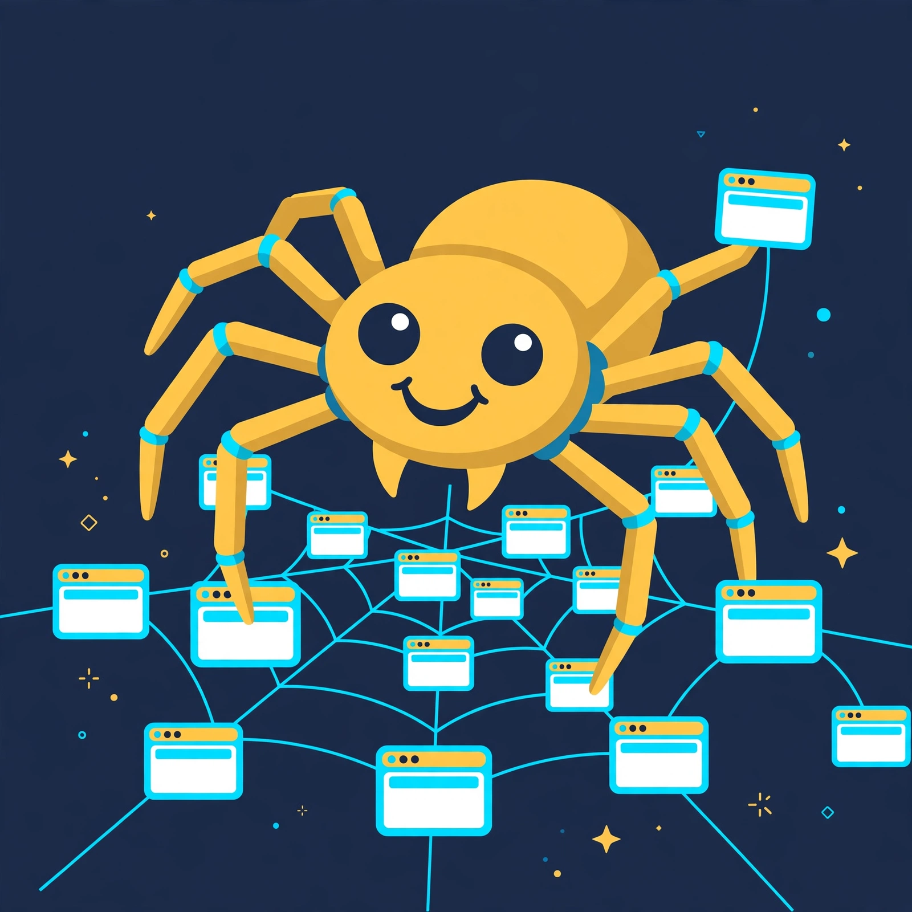

Meet Webby the Spider, the mascot of this website. The guide here is JAH Web Librarian, keeper of Websites Database.
Demo guide — answers from this subject’s own records on this page. The guide below answers from the records of Websites Database shipped on this page (keyword answers from the archive). It is not the full engine and it does not check the live web.
Online fact-checking: not connected yet — it needs the network’s hosted guide, which is waiting on setup. This page does not pretend to check the live web.
It knows Websites Database and its Signature edition:
It answers from the 24 records in the archive sample on this page. It cannot check the live web, it cannot open new records, and it never asks for a key — no key is ever entered, saved, or shown here.
Sample questions, with their demo answers as written text:
Q: How many website records are there?
A: 1,000,000 records in the Websites Database, all live — computed virtually from the creator’s deterministic option archive. 24 template records are filed as JAH-TPL files.
Q: What is the first template?
A: JAH-TPL-0000001, "Cozy Bakery Studio", category Bakery and Food, style Soft Pastel.
Q: What categories can a website be?
A: 20 categories, among them Bakery and Food, Portfolio, Blog and Writing, Local Business, Online Store, Restaurant, Photography, and Music and Band.
Q: What styles can a website have?
A: 8 styles: Cozy Classic, Bold Modern, Soft Pastel, Dark Neon, Sunny Bright, Earthy Calm, Ocean Fresh, and Royal Gold.
Q: What is the Signature edition?
A: websites-signature, 20 records with IDs beginning JAH-SITES-. They are Signature originals: a field guide, five principles, a glossary, a teaching ladder, and method guides.
The archive sample comes from the live manifest and the live archive indexes, read 2026-11-21. Full records: Websites Database.
Accessible version of this page · Download the archive sample (JSON)